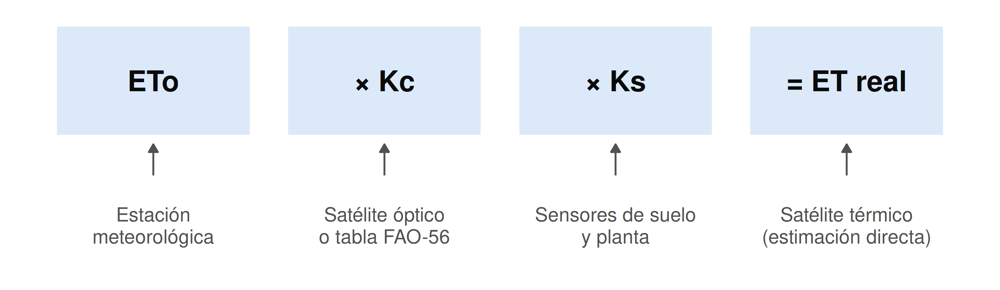
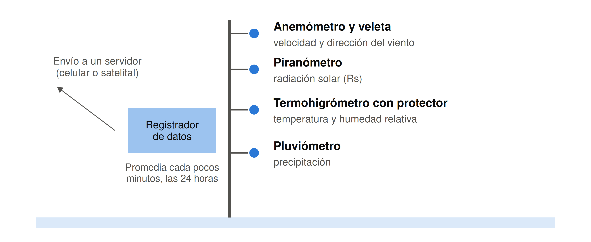
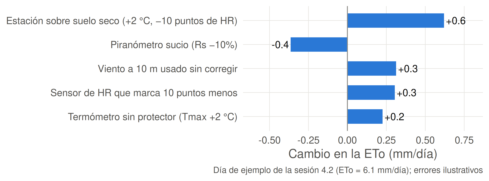
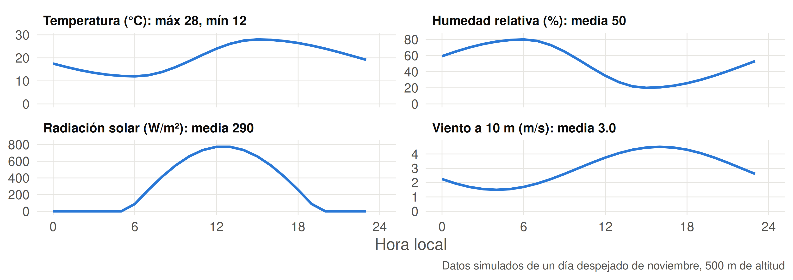
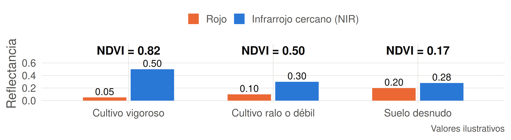
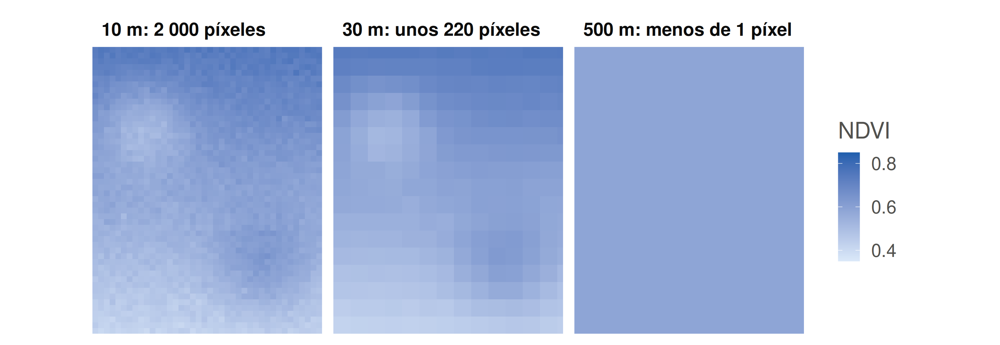
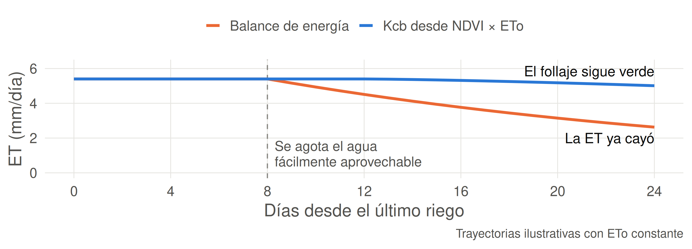
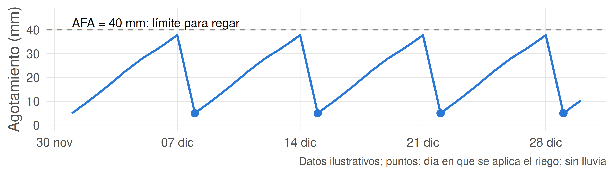

Sesión 4.3: Tecnologías y plataformas para estimar ET
Parronal de 20 ha en la zona central. La estación más cercana informa \(ET_o = 6\) mm/día.
Sector A ≈ 5.9 mm/día. Sector B ≈ 3.3 mm/día.
La estación describe el clima. El satélite muestra el cultivo en cada sector.
Ideas fuerza de la sesión anterior:
Tu tarea: revisaste las variables de una estación en redmeteo.cl. ¿Podrías usar Penman-Monteith con ella?
Ahora: vemos quién mide esos datos, dónde encontrarlos y qué agregan los satélites.
| Unidad | 4 — Requerimiento hídrico de los cultivos |
| Sesión | 4.3 |
| RAA | RAA6; introduce temas de RAA9 y RAA10 (Unidad 6) |
| Duración | ~90 minutos |
| Contenido | EMA, redmeteo.cl, Agromet, NDVI, teledetección de ET, introducción a la programación de riego |
Al finalizar esta sesión, serás capaz de:

Decidir un riego requiere combinar varias fuentes de datos.

| Variable | Sensor | Unidad usual | Altura típica | Se usa en |
|---|---|---|---|---|
| Temperatura | Termistor con protector | °C | 1.5–2 m | \(\Delta\), \(e_s\), \(R_{nl}\) |
| Humedad relativa | Higrómetro capacitivo | % | 1.5–2 m | \(e_a\), DPV |
| Radiación solar | Piranómetro | W/m² | ≥ 2 m | \(R_n\) |
| Viento | Anemómetro | m/s | 2 m o 10 m | \(u_2\) |
| Precipitación | Pluviómetro | mm | ~1 m | Balance hídrico (Unidad 5) |
La lluvia queda fuera de la ETo y entra en el balance hídrico, para calcular cuánto regar.
| La estación informa… | Método | Calidad esperada |
|---|---|---|
| \(T\), HR, \(R_s\) y viento | Penman-Monteith FAO-56 | La mejor opción |
| \(T\) y HR, sin viento | Penman-Monteith con \(u_2 \approx 2\) m/s | Aceptable donde el viento es moderado |
| \(T\) y viento, sin \(R_s\) | Penman-Monteith con \(R_s\) estimada desde \(T_{max} - T_{min}\) | Aceptable; verificar localmente |
| Solo \(T_{max}\) y \(T_{min}\) | Hargreaves-Samani | Mejor en promedios de 5 días o más |
Vuelve a tu tarea: ¿en qué fila queda la estación que elegiste?
Penman-Monteith supone que el sensor mide el aire sobre un pasto bien regado. FAO-56 da estas condiciones:
| Condición de referencia | Qué ocurre si no se cumple |
|---|---|
| Superficie verde y regada alrededor de la estación | Sobre suelo seco o pavimento, el aire es más cálido y seco |
| Lejos de edificios y árboles | Se reducen el viento y la radiación medidos |
| Sensores a la altura estándar | El viento medido a 10 m supera al de 2 m |
| Mantención y calibración periódicas | Un piranómetro sucio mide menos radiación |

Un error de 0.6 mm/día durante un mes equivale a 180 m³/ha de agua que se riegan de más.
1. Radiación. De promedio diario en W/m² a MJ/m²/día:
\[ R_s\ [\text{MJ/m}^2\text{/día}] = R_s\ [\text{W/m}^2] \times 0.0864 \]
2. Viento. De la altura del sensor \(z\) a 2 m:
\[ u_2 = u_z \times \frac{4.87}{\ln(67.8\, z - 5.42)} \qquad \text{para } z = 10 \text{ m: } u_2 = 0.748\, u_{10} \]
3. Hora. Si los datos vienen en UTC, conviértelos a hora local antes de separar los días. Chile continental usa UTC−3 en horario de verano y UTC−4 en invierno.
| RedMeteo (redmeteo.cl) | Agromet (agrometeorologia.cl) | |
|---|---|---|
| Operador | Red de meteorólogos aficionados y profesionales | INIA, con estaciones de CEAZA, DMC y otras instituciones |
| Tamaño | Sin cifra en su portada | 486 estaciones informadas en su portal |
| Foco | Meteorología general, en tiempo real | Información para la agricultura |
| ETo publicada | No aparece en su portal: se calcula | Sí, junto con grados día y horas de frío |
| Descarga | Histórico por formulario, hasta 6 meses | CSV o Excel, con verificación |
Para ETo lista, usa Agromet. Para practicar el cálculo o cubrir un lugar sin estación agrícola, usa RedMeteo y revisa bien dónde está instalada.

Temperatura: extremos del día. Humedad, radiación y viento: promedio de 24 horas.
Problema: Con los datos del gráfico anterior: \(T_{max} = 28\) °C, \(T_{min} = 12\) °C, HR = 50%, \(R_s = 290\) W/m², \(u_{10} = 3\) m/s.
Datos auxiliares: \(e^\circ(28) = 3.78\); \(e^\circ(12) = 1.40\); \(e^\circ(20) = 2.34\) kPa; \(\gamma = 0.064\) kPa/°C; \(R_{nl} \approx 5\) MJ/m²/día.
Resuelve en 8 minutos. Mismos pasos de la sesión 4.2.
Abramos juntos agrometeorologia.cl:
Para discutir: ¿a cuántos km está la estación del predio? ¿Tienen la misma influencia de costa, cordillera y altitud?
Un satélite mide la radiación que refleja y emite cada píxel. La ET se estima con un modelo a partir de esas mediciones.
| Estación | Satélite | |
|---|---|---|
| Observa | La atmósfera en un punto | La superficie en toda el área |
| Entrega | Clima para calcular ETo | Estado del cultivo y variación dentro del predio |
| Frecuencia | Minutos | Días |
| Limitación | Representa su entorno | Las nubes impiden observar |
Las dos fuentes se complementan: la mayoría de los métodos satelitales usa datos de estaciones.

\[ NDVI = \frac{NIR - Rojo}{NIR + Rojo} \]
La clorofila absorbe el rojo y la estructura de la hoja refleja el infrarrojo cercano.
El coeficiente basal (\(K_{cb}\)) es la parte del Kc que corresponde a la transpiración. Crece con la cobertura, y esa cobertura se refleja en el NDVI:
\[ K_{cb} = 1.44 \times NDVI - 0.10 \qquad \text{(vid, Campos et al., 2010)} \]
| Sector del parronal | NDVI | \(K_{cb}\) | \(ET_c\) con \(ET_o = 6\) mm/día |
|---|---|---|---|
| A: vigoroso | 0.75 | 0.98 | 5.9 mm/día |
| B: débil | 0.45 | 0.55 | 3.3 mm/día |
El satélite aporta un Kc propio de cada sector y de cada fecha.
Problema: En un sector de 5 ha de vid con riego por goteo, una imagen entrega \(NIR = 0.42\) y \(Rojo = 0.06\). La estación informa \(ET_o = 5.5\) mm/día.
Resuelve en 4 minutos.
| Satélite | Píxel | Revisita | Banda térmica | Sirve para |
|---|---|---|---|---|
| Sentinel-2 | 10 m | ~5 días | No | NDVI y Kc por sector de un predio |
| Landsat 8 y 9 | 30 m | ~8 días (ambos) | Sí | Balance de energía a escala de potrero |
| MODIS | 250–1000 m | 1–2 días | Sí | Seguimiento regional; poca resolución para predios |
Hay un compromiso: más detalle suele implicar menos imágenes por mes.

A 500 m, un solo píxel cubre más que el potrero y mezcla lo que hay alrededor.
Retomamos la sesión 4.1. El satélite térmico mide la temperatura de la superficie, y con ella se estima \(H\):
\[ \lambda E = R_n - G - H \]
| Píxel regado (frío) | Píxel con falta de agua (caliente) | |
|---|---|---|
| \(R_n - G\) (MJ/m²/día) | 15 | 15 |
| \(H\) (MJ/m²/día) | 4 | 10 |
| \(\lambda E\) (MJ/m²/día) | 11 | 5 |
| ET (÷ 2.45) | 4.5 mm/día | 2.0 mm/día |
Una superficie que evapora se enfría. Si le falta agua, se calienta y la energía va al aire.

NDVI: cuánta agua podría usar el follaje. Balance de energía: cuánta está usando.
| Criterio | NDVI + Kc | Balance de energía |
|---|---|---|
| Sensor | Óptico (rojo, NIR) | Óptico y térmico |
| Estima | ETc potencial del cultivo | ET real |
| Requiere ETo | Sí, de una estación | En METRIC, sí, para calibrar y escalar |
| Detalle y frecuencia | Alta con Sentinel-2 (10 m, ~5 días) | Menor con Landsat (30 m, ~8 días) |
| Detecta estrés reciente | Poco | Sí |
| Complejidad | Baja: cálculo simple | Alta: requiere especialistas o plataforma |
NDVI para planificar cuánta agua reponer. Térmico para revisar cuánta usó el cultivo.
| Plataforma | Qué entrega | Resolución | Cobertura y acceso |
|---|---|---|---|
| Agromet (INIA) | ETo y datos de estaciones | Punto (estación) | Chile; libre |
| PLAS (INIA) | NDVI y \(K_{cb}\) | MODIS o Sentinel-2 | Coquimbo a Biobío; con usuario |
| Copernicus Browser | Imágenes Sentinel y NDVI | 10 m | Mundial; libre |
| WaPOR (FAO) | ET real por teledetección | 300 m, cada 10 días | Mundial; libre |
| OpenET | ET real, conjunto de 6 modelos | 30 m | Estados Unidos; referencia |
También existen servicios comerciales. Antes de contratar, pregunta qué modelo usan y cómo se validó en tu cultivo.
En parejas, elige la fuente de ETo y de Kc para cada caso, y justifica.
| Caso | Situación |
|---|---|
| A | 1.5 ha de tomate; hay una estación Agromet a 5 km en el mismo valle |
| B | 80 ha de parronal con sectores de distinto vigor |
| C | 30 ha de nogal; el vecino te da datos de la estación de su azotea |
| D | Un huerto bien regado por calendario muestra menor calibre y quieres saber si le faltó agua |
Resuelve en 5 minutos.

\[ \text{Agotamiento}_{hoy} = \text{Agotamiento}_{ayer} + ET_c - \text{Lluvia efectiva} - \text{Riego} \]
La ETc se acumula hasta llegar a la AFA de la Unidad 2. En este mes: 4 riegos en 30 días.
Problema: Un cultivo con \(K_c = 0.9\) y AFA = 25 mm se regó hasta capacidad de campo la noche anterior al día 1. No llueve.
| Día | 1 | 2 | 3 | 4 | 5 | 6 | 7 |
|---|---|---|---|---|---|---|---|
| ETo (mm) | 5.0 | 5.5 | 6.0 | 6.5 | 4.0 | 5.0 | 6.0 |
Resuelve en 5 minutos.
Situación: Asesoras 10 ha de vid con goteo, cerca de Rancagua. Agromet informa \(ET_o = 6.0\) mm/día. La imagen de hoy entrega \(NIR = 0.40\) y \(Rojo = 0.08\). La AFA es de 30 mm.
Resuelve en 6 minutos.
| Término | Definición |
|---|---|
| EMA | Estación que registra y transmite variables del clima sin intervención humana |
| Piranómetro | Sensor de radiación solar (\(R_s\)) |
| Teledetección | Medición de una superficie sin contacto, desde satélites o drones |
| Píxel | Unidad mínima de una imagen; su tamaño define el detalle observable |
| Revisita | Tiempo entre dos pasadas de un satélite por el mismo lugar |
| NDVI | Índice de vegetación calculado con el rojo y el infrarrojo cercano |
| \(K_{cb}\) | Coeficiente basal: parte del Kc debida a la transpiración |
| Banda térmica | Banda que mide la radiación emitida; permite estimar la temperatura de la superficie |
| METRIC, SEBAL | Modelos que estiman la ET real con el balance de energía |
Una EMA mide \(T\), HR, \(R_s\), viento y lluvia; su ubicación y mantención cambian la ETo
Antes de calcular, ajusta unidades, altura del viento y hora de los datos
Agromet publica ETo para la agricultura; con RedMeteo se calcula a partir de los datos de cada estación
El NDVI refleja el follaje y permite estimar un Kc por sector y fecha
El balance de energía con banda térmica estima la ET real y revela el estrés que el NDVI tarda en mostrar
El tamaño del píxel define si un satélite sirve para tu predio
La ETc acumulada frente a la AFA indica cuándo regar
Sesión 5.1: Frecuencia y tiempo de riego
Para preparar: repasa la Unidad 2 y calcula la ADT y la AFA de un suelo con \(\theta_{CC} = 0.30\), \(\theta_{PMP} = 0.14\), \(Z_r = 0.6\) m y \(p = 0.5\).
Taller 4: programarás Hargreaves-Samani, Penman-Monteith y la curva de Kc.
Nombre los sensores de una EMA y la variable de Penman-Monteith que alimenta cada uno.
Un anemómetro a 10 m registra 4 m/s. ¿Cuál es \(u_2\)?
¿Por qué una estación instalada sobre pavimento tiende a sobrestimar la ETo?
Un píxel tiene \(NIR = 0.45\) y \(Rojo = 0.05\). Calcule el NDVI y el \(K_{cb}\) con la ecuación para vid.
¿Cuántos píxeles de Landsat y de Sentinel-2 tiene un predio de 9 ha?
¿Por qué el NDVI puede mantenerse alto mientras la ET real cae?
Con AFA = 35 mm y \(ET_c = 5\) mm/día, ¿cada cuántos días hay que regar?
TAG2027 — Relación Suelo Agua Planta | UDLA